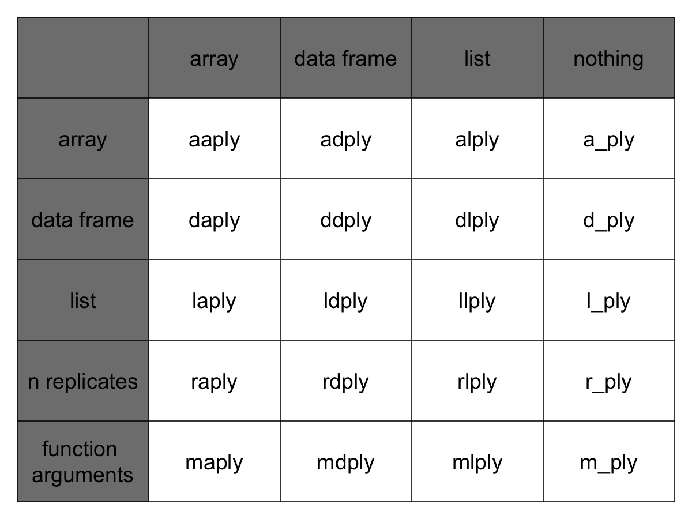

Introducción a R
Luciano Selzer
19 September, 2016
Anteriormente vimos como las funciones simplifican nuestro código.
Definimos la función calcPBI que calcula el PBI y le agregamos dos argumentos para poder calcular por año y/o país
# Takes a dataset and multiplies the population column
# with the GDP per capita column.
calcPBI <- function(dat, year=NULL, country=NULL) {
if(!is.null(year)) {
dat <- dat[dat$year %in% year, ]
}
if (!is.null(country)) {
dat <- dat[dat$country %in% country,]
}
gdp <- dat$pop * dat$gdpPercap
new <- cbind(dat, gdp=gdp)
return(new)
}Divide y vencerás
Muchas veces queremos hacer los cálculos u operaciones por grupo.
Arriba calculamos el PBI multiplicando dos columnas. ¿Y si quisieramos calcular el PBI medio por continente?
Podríamos ejecutar calcGPD y luego calcular la media de cada continente:
conPBI <- calcPBI(gapminder)
mean(conPBI[conPBI$continent == "Africa", "gdp"])[1] 20904782844mean(conPBI[conPBI$continent == "Americas", "gdp"])[1] 379262350210mean(conPBI[conPBI$continent == "Asia", "gdp"])[1] 227233738153Pero no es muy lindo. Usando una función disminuimos la repetición. Eso está bueno.
Pero hay mucha repetición: lleva tiempo, ahora y más adelante, y puede introducir errores.
Podríamos escribir una nueva función que sea flexible como calcPBI, el esfuerzo sería considerable y muchas pruebas para hacerlo bien.
El problema que tenemos se conoce como “divide-aplica-combina”:

El paquete plyr
Familia de funciones apply.
El paquete plyr provee un set de herramientas que hacen que sea más amigable lidiar con este problema.
library(plyr)Plyr tiene funciones para operar en listas, data.frames y arreglos (matrices, o vectores n-dimensionales). Cada función: Plyr has functions for operating on lists, data.frames and arrays (matrices, or n-dimensional vectors). Each function performs:
- Una operación de división.
- Aplica una función en cada división.
- Recombina las salidas como un solo objeto.
El nombre de la funciones depende de lo que esperan como entrada, y la estructura de salida.

Cada función de **ply (daply, ddply, llply, laply, …) tiene la misma estructura y las mismas 4 caraterísticas clave y estructura:
**ply(.data, .variables, .fun)- La primera letra correponde al tipo de entrada y la seguna el tipo de salida
- .data - el objeto a ser procesado
- .variables - identifica las variables para dividir
- .fun - da la función a ser ejecutada en cada pedazo
Ahora podemos ejecutar rápidamente la media de PBI por continente:
ddply(
.data = calcPBI(gapminder),
.variables = "continent",
.fun = function(x) mean(x$gdp)
) continent V1
1 Africa 20904782844
2 Americas 379262350210
3 Asia 227233738153
4 Europe 269442085301
5 Oceania 188187105354¿Qué tal si quisieramos otro tipo de salida?
dlply(
.data = calcPBI(gapminder),
.variables = "continent",
.fun = function(x) mean(x$gdp)
)$Africa
[1] 20904782844
$Americas
[1] 379262350210
$Asia
[1] 227233738153
$Europe
[1] 269442085301
$Oceania
[1] 188187105354
attr(,"split_type")
[1] "data.frame"
attr(,"split_labels")
continent
1 Africa
2 Americas
3 Asia
4 Europe
5 OceaniaLlamamos la misma función de nuevo, pero cambiamos la segunda letra a l, por lo que la salida es devuelta como una lista.
Podemos especificar varias columnas por grupo:
ddply(
.data = calcPBI(gapminder),
.variables = c("continent", "year"),
.fun = function(x) mean(x$gdp)
) continent year V1
1 Africa 1952 5992294608
2 Africa 1957 7359188796
3 Africa 1962 8784876958
4 Africa 1967 11443994101
5 Africa 1972 15072241974
6 Africa 1977 18694898732
7 Africa 1982 22040401045
8 Africa 1987 24107264108
9 Africa 1992 26256977719
10 Africa 1997 30023173824
11 Africa 2002 35303511424
12 Africa 2007 45778570846
13 Americas 1952 117738997171
14 Americas 1957 140817061264
15 Americas 1962 169153069442
16 Americas 1967 217867530844
17 Americas 1972 268159178814
18 Americas 1977 324085389022
19 Americas 1982 363314008350
20 Americas 1987 439447790357
21 Americas 1992 489899820623
22 Americas 1997 582693307146
23 Americas 2002 661248623419
24 Americas 2007 776723426068
25 Asia 1952 34095762661
26 Asia 1957 47267432088
27 Asia 1962 60136869012
28 Asia 1967 84648519224
29 Asia 1972 124385747313
30 Asia 1977 159802590186
31 Asia 1982 194429049919
32 Asia 1987 241784763369
33 Asia 1992 307100497486
34 Asia 1997 387597655323
35 Asia 2002 458042336179
36 Asia 2007 627513635079
37 Europe 1952 84971341466
38 Europe 1957 109989505140
39 Europe 1962 138984693095
40 Europe 1967 173366641137
41 Europe 1972 218691462733
42 Europe 1977 255367522034
43 Europe 1982 279484077072
44 Europe 1987 316507473546
45 Europe 1992 342703247405
46 Europe 1997 383606933833
47 Europe 2002 436448815097
48 Europe 2007 493183311052
49 Oceania 1952 54157223944
50 Oceania 1957 66826828013
51 Oceania 1962 82336453245
52 Oceania 1967 105958863585
53 Oceania 1972 134112109227
54 Oceania 1977 154707711162
55 Oceania 1982 176177151380
56 Oceania 1987 209451563998
57 Oceania 1992 236319179826
58 Oceania 1997 289304255183
59 Oceania 2002 345236880176
60 Oceania 2007 403657044512daply(
.data = calcPBI(gapminder),
.variables = c("continent", "year"),
.fun = function(x) mean(x$gdp)
) year
continent 1952 1957 1962 1967
Africa 5992294608 7359188796 8784876958 11443994101
Americas 117738997171 140817061264 169153069442 217867530844
Asia 34095762661 47267432088 60136869012 84648519224
Europe 84971341466 109989505140 138984693095 173366641137
Oceania 54157223944 66826828013 82336453245 105958863585
year
continent 1972 1977 1982 1987
Africa 15072241974 18694898732 22040401045 24107264108
Americas 268159178814 324085389022 363314008350 439447790357
Asia 124385747313 159802590186 194429049919 241784763369
Europe 218691462733 255367522034 279484077072 316507473546
Oceania 134112109227 154707711162 176177151380 209451563998
year
continent 1992 1997 2002 2007
Africa 26256977719 30023173824 35303511424 45778570846
Americas 489899820623 582693307146 661248623419 776723426068
Asia 307100497486 387597655323 458042336179 627513635079
Europe 342703247405 383606933833 436448815097 493183311052
Oceania 236319179826 289304255183 345236880176 403657044512Podemos llamar a estas funciones en lugar de bucles for (y generalmente es más rápido). Para reemplazar un bucle for, pon el código del cuerpo del bucle dentro una función anónima.
d_ply(
.data = gapminder,
.variables = "continent",
.fun = function(x) {
meanGDPperCap <- mean(x$gdpPercap)
print(paste(
"The mean GDP per capita for", unique(x$continent),
"is", format(meanGDPperCap, big.mark = ",")
))
}
)[1] "The mean GDP per capita for Africa is 2,193.755"
[1] "The mean GDP per capita for Americas is 7,136.11"
[1] "The mean GDP per capita for Asia is 7,902.15"
[1] "The mean GDP per capita for Europe is 14,469.48"
[1] "The mean GDP per capita for Oceania is 18,621.61"Tip: Imprimiendo números
La función format puede ser usada para hacer los números que quedn “bien” para imprimir mensajes.
Ejercicio 1
Calcula la expectativa de vida promedio por contiente. ¿Cuál es la mayor? ¿Cuál es la menor?
Ejercicio 2
Calcula la expectativa de vida promedio por continente y por año. ¿Cual tuvo la expectativa más corta y más larga en 2007? ¿Cual tuvo el mayor cambio entre 1952 y 2007?
Ejercicio Avanzado
Calcula la diferencia de medias entre la expectativa de vida en los años 1952 y 2007 usando la salida del ejercicio 2 usando una de las funciones de plyr.